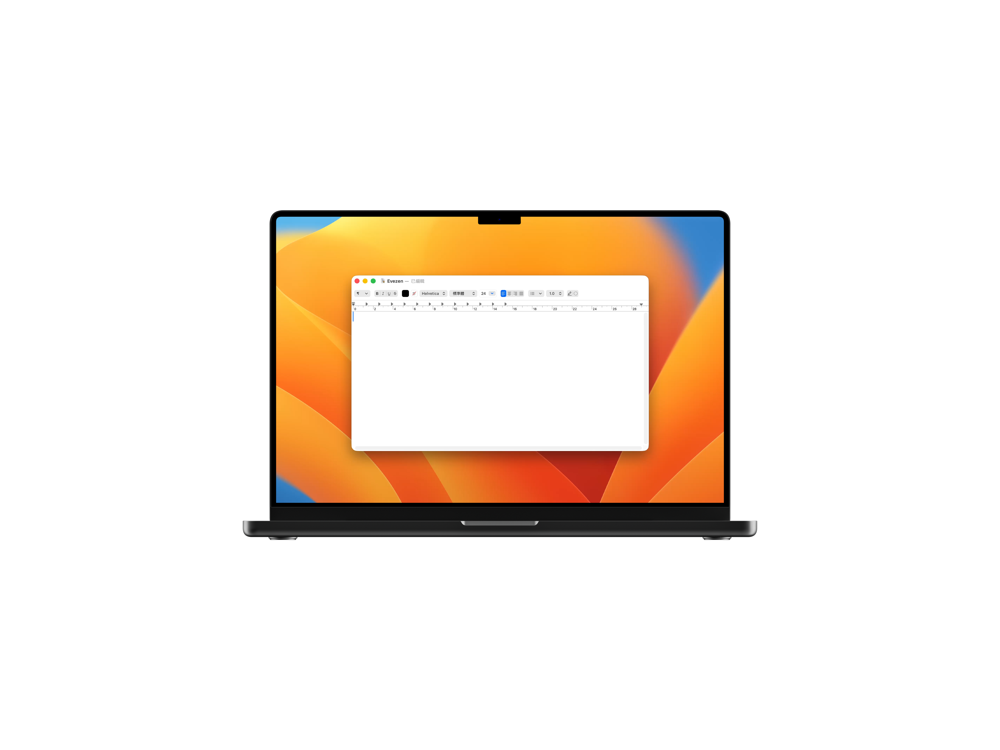
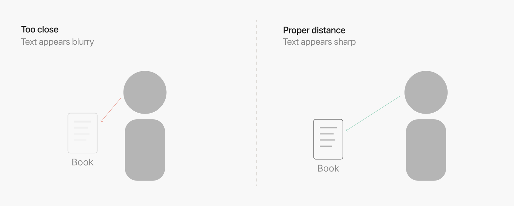

EYEZEN
Screen eye-care software
"What if we could intuitively feel that we're too close to the screen without any notification at all?"
An eye-care software that uses the front camera to detect viewing distance and applies corresponding levels of screen blur — replacing intrusive alerts and naturally guiding users to correct their posture without disrupting workflow.
2024/02
context
The deeper we focus, the closer we lean in.
Deep focus at a computer causes us to unconsciously drift closer and closer to the screen — a direct contributor to worsening nearsightedness and neck pain, yet it is something people rarely notice in the moment.
research
It's not just your eyes
Leaning toward the screen unconsciously affects more than just your eyesight. According to Hansraj (2014), tilting your head forward by just 15 degrees increases the load on your cervical spine from 5 kg to 12 kg. Sustained over hours, this posture can lead to forward head posture, chronic neck and shoulder pain, and lasting fatigue.
Why do existing solutions fail?
People wanted cues that felt physiological rather than punitive—something that scaled with how “wrong” their distance was, not a binary nag. Privacy came up often: they accepted camera use when the pipeline stayed on-device and the UI made that clear.
|
Focused on time, not distance Most eye-care tools simply remind users to take breaks at fixed intervals. |
Notifications break focus Pop-up alerts interrupt flow state. Users instinctively disable the software altogether. |
No real-time feedback Without continuous distance awareness, users can’t detect or correct their posture in the moment. |
design challenge
How might we guide users to notice and correct their screen distance and posture without disrupting their focus?
solution
An app inspired by the mechanism of mydriatic eye drops.

When user open the app, there would be a transparent layer on the computer screen that updates every 0.05 seconds, adjusting the blur level based on the distance between the user and the screen.